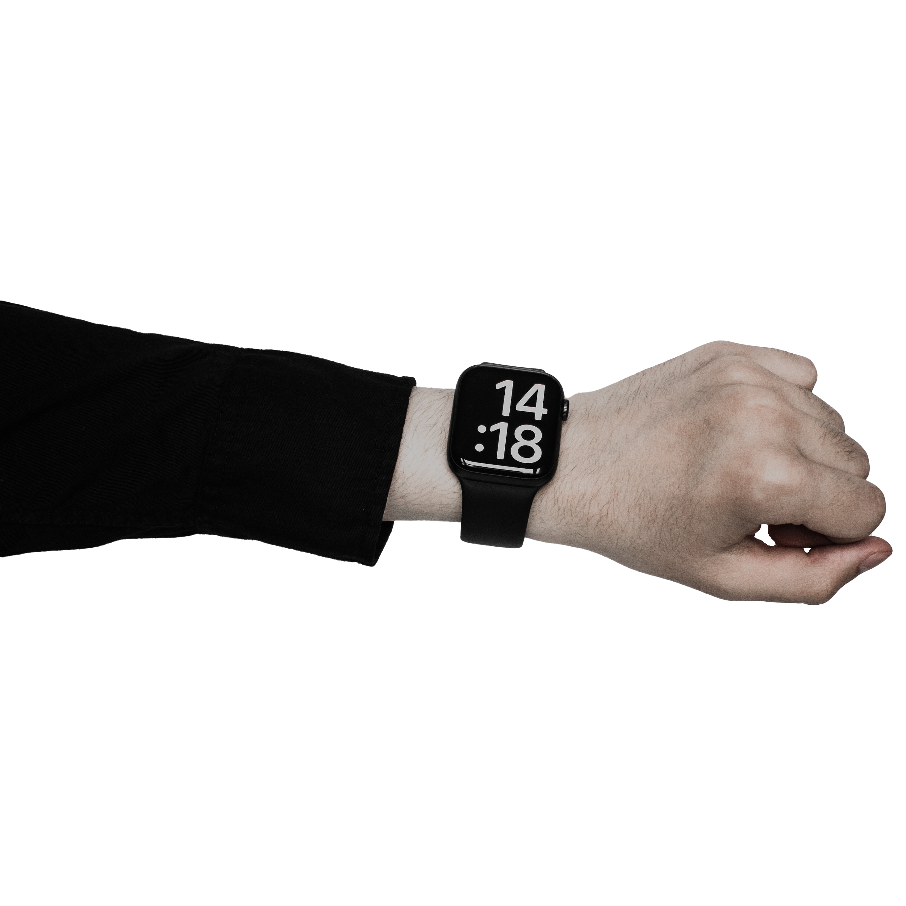
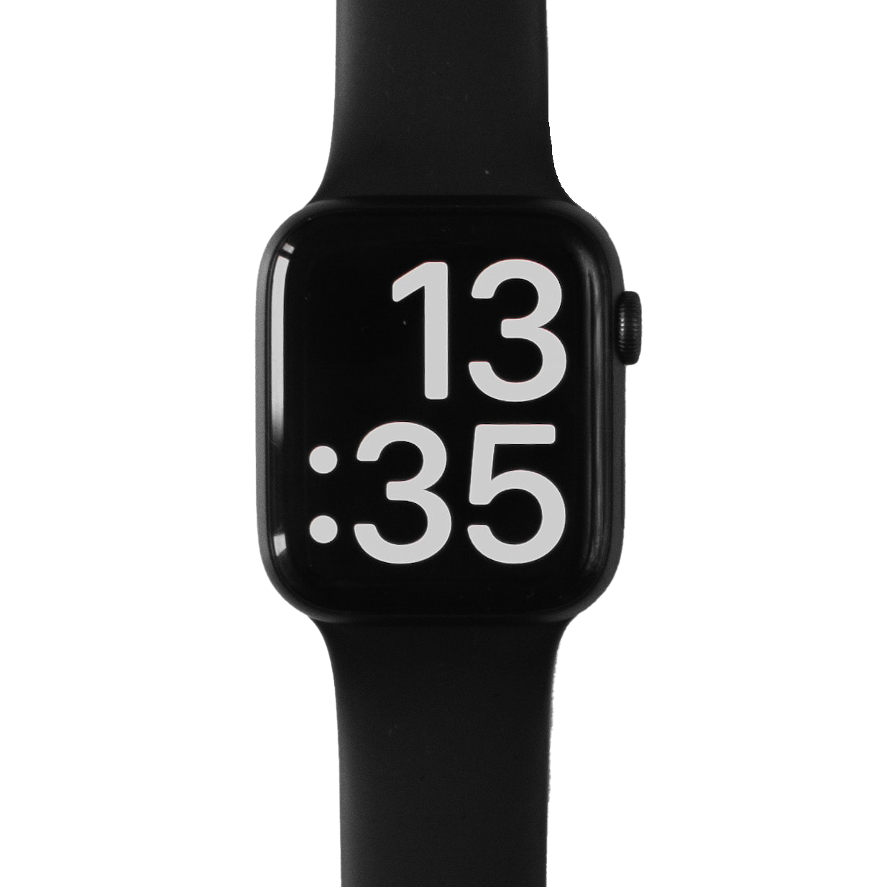

AWESOME
STYLE
Seconds is the result of a careful and imaginative creative process that aims to challenge the wearer's perception of time. A stunning black 40mm sandblasted steel 316 case houses the japanese quartz movement and a PVD-coated, matte finish dial for the best use

SECONDS
WATCH
this minimalist watch maintains their signature
asthetic as it pushes the boundaries of
design
possibility. Despite its almost effortless
appearance. seconds is the
result of a careful and
imaginative creative process
5
ATM
40
MM STEEL
316
CASE
